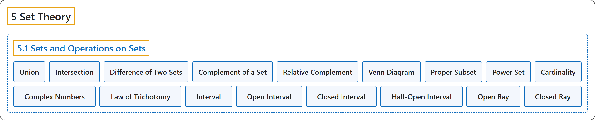

5.1 Sets and Operations on Sets
Classification

Glossary
| Term | Definition | 中文翻译 | Source |
|---|---|---|---|
| 5 Set Theory 集合论 |
(No definition) | （无定义） | Sundstrom, 2022, chapter 5 |
| 5.1 Sets and Operations on Sets 集合与集合运算 |
(No definition) | （无定义） | Sundstrom, 2022, section 5.1 |
| Union 并集 |
"The union of \(A\) and \(B\text{,}\) written \(A \cup B\) and read “\(A\) union \(B\text{,}\)” is the set of all elements that are in \(A\) or in \(B\text{.}\)" | \(A\) 与 \(B\) 的并集，记作 \(A \cup B\)，读作“\(A\) 并 \(B\)”，是属于 \(A\) 或属于 \(B\) 的所有元素组成的集合。 | Sundstrom, 2022, section 5.1 |
| Intersection 交集 |
"The intersection of \(A\) and \(B\text{,}\) written \(A \cap B\) and read “\(A\) intersect \(B\text{,}\)” is the set of all elements that are in both \(A\) and \(B\text{.}\)" | \(A\) 与 \(B\) 的交集，记作 \(A \cap B\)，读作“\(A\) 交 \(B\)”，是同时属于 \(A\) 和 \(B\) 的所有元素组成的集合。 | Sundstrom, 2022, section 5.1 |
| Difference of Two Sets 两个集合的差 |
"The set difference of \(A\) and \(B\text{,}\) or relative complement of \(B\) with respect to \(A\text{,}\) written \(A - B\) and read “\(A\) minus \(B\)” or “the complement of \(B\) with respect to \(A\text{,}\)” is the set of all elements in \(A\) that are not in \(B\text{.}\)" | \(A\) 与 \(B\) 的差集，或 \(B\) 相对于 \(A\) 的相对补集，记作 \(A - B\)，读作“\(A\) 减 \(B\)”或“\(B\) 相对于 \(A\) 的补集”，是属于 \(A\) 但不属于 \(B\) 的所有元素组成的集合。 | Sundstrom, 2022, section 5.1 |
| Complement of a Set 集合的补集 |
"The complement of the set \(A\text{,}\) written \(A^c\) and read “the complement of \(A\text{,}\)” is the set of all elements of \(U\) that are not in \(A\text{.}\)" | 集合 \(A\) 的补集，记作 \(A^c\)，读作“\(A\) 的补集”，是全集 \(U\) 中不属于 \(A\) 的所有元素组成的集合。 | Sundstrom, 2022, section 5.1 |
| Relative Complement 相对补集 |
"The set difference of \(A\) and \(B\text{,}\) or relative complement of \(B\) with respect to \(A\text{,}\) written \(A - B\) and read “\(A\) minus \(B\)” or “the complement of \(B\) with respect to \(A\text{,}\)” is the set of all elements in \(A\) that are not in \(B\text{.}\)" | \(A\) 与 \(B\) 的差集，或 \(B\) 相对于 \(A\) 的相对补集，记作 \(A - B\)，读作“\(A\) 减 \(B\)”或“\(B\) 相对于 \(A\) 的补集”，是属于 \(A\) 但不属于 \(B\) 的所有元素组成的集合。 | Sundstrom, 2022, section 5.1 |
| Venn Diagram 维恩图 |
"Venn diagrams are used to represent sets by circles (or some other closed geometric shape) drawn inside a rectangle." | 维恩图用画在矩形内的圆（或其他封闭几何图形）来表示集合。 | Sundstrom, 2022, section 5.1 |
| Proper Subset 真子集 |
"The set \(A\) is a proper subset of \(B\) provided that \(A \subseteq B\) and \(A \ne B\text{.}\) When \(A\) is a proper subset of \(B\text{,}\) we write \(A \subset B\text{.}\)" | 如果 \(A \subseteq B\) 且 \(A \ne B\)，集合 \(A\) 就是 \(B\) 的真子集。当 \(A\) 是 \(B\) 的真子集时，记作 \(A \subset B\)。 | Sundstrom, 2022, section 5.1 |
| Power Set 幂集 |
"If \(A\) is a subset of a universal set \(U\text{,}\) then the set whose members are all the subsets of \(A\) is called the power set of \(A\text{.}\)" | 如果 \(A\) 是全集 \(U\) 的子集，那么以 \(A\) 的所有子集为成员的集合称为 \(A\) 的幂集。 | Sundstrom, 2022, section 5.1 |
| Cardinality 势 |
"The number of elements in a finite set \(A\) is called the cardinality of \(A\) and is denoted by \(\mathbf{card}(A)\text{.}\)" | 有限集 \(A\) 中元素的个数称为 \(A\) 的势，记作 \(\mathbf{card}(A)\)。 | Sundstrom, 2022, section 5.1 |
| Complex Numbers 复数 |
"The complex numbers, \(\mathbb{C}\text{,}\) consist of all numbers of the form \(a + bi\text{,}\) where \(a, b \in \mathbb R\) and \(i = \sqrt{-1}\) (or \(i^2 = -1\))." | 复数集 \(\mathbb{C}\) 由所有形如 \(a + bi\) 的数组成，其中 \(a, b \in \mathbb R\)，\(i = \sqrt{-1}\)（即 \(i^2 = -1\)）。 | Sundstrom, 2022, section 5.1 |
| Law of Trichotomy 三分律 |
"One of the properties of real numbers is the so-called Law of Trichotomy, which states that if \(a, b \in \mathbb R\text{,}\) then exactly one of the following is true: \(a \lt b\text{;}\) \(a = b\text{;}\) \(a > b\text{.}\)" | 实数的一个性质是所谓的三分律：若 \(a, b \in \mathbb R\)，则下列情况恰有一种成立：\(a \lt b\)；\(a = b\)；\(a > b\)。 | Sundstrom, 2022, section 5.1 |
| Interval 区间 |
"In previous mathematics courses, we have frequently used subsets of the real numbers called intervals." | 在以前的数学课程中，我们经常使用称为区间的实数子集。 | Sundstrom, 2022, section 5.1 |
| Open Interval 开区间 |
"\(\left( {a,b} \right) =\) \(\left\{ {x \in \mathbb{R}\left. \right\vert a \lt x \lt b} \right\}\) Open interval from \(a\) to \(b\)" | \(\left( {a,b} \right) =\) \(\left\{ {x \in \mathbb{R}\left. \right\vert a \lt x \lt b} \right\}\) 从 \(a\) 到 \(b\) 的开区间 | Sundstrom, 2022, section 5.1 |
| Closed Interval 闭区间 |
"\(\left[ {a,b} \right] =\) \(\left\{ {x \in \mathbb{R}\left. \right\vert a \leq x \leq b} \right\}\) Closed interval from \(a\) to \(b\)" | \(\left[ {a,b} \right] =\) \(\left\{ {x \in \mathbb{R}\left. \right\vert a \leq x \leq b} \right\}\) 从 \(a\) 到 \(b\) 的闭区间 | Sundstrom, 2022, section 5.1 |
| Half-Open Interval 半开区间 |
"\(\left[ {a,b} \right) =\) \(\left\{ {x \in \mathbb{R}\left. \right\vert a \leq x \lt b} \right\}\) Half-open interval \(\left( {a,b} \right] =\) \(\left\{ {x \in \mathbb{R}\left. \right\vert a \lt x \leq b} \right\}\) Half-open interval" | \(\left[ {a,b} \right) =\) \(\left\{ {x \in \mathbb{R}\left. \right\vert a \leq x \lt b} \right\}\) 半开区间；\(\left( {a,b} \right] =\) \(\left\{ {x \in \mathbb{R}\left. \right\vert a \lt x \leq b} \right\}\) 半开区间 | Sundstrom, 2022, section 5.1 |
| Open Ray 开射线 |
"\(\left( {a, + \infty } \right) =\) \(\left\{ {\left. {x \in \mathbb{R}} \right\vert x > a} \right\}\) Open ray \(\left( { - \infty ,b} \right) =\) \(\left\{ {\left. {x \in \mathbb{R}} \right\vert x \lt b} \right\}\) Open ray" | \(\left( {a, + \infty } \right) =\) \(\left\{ {\left. {x \in \mathbb{R}} \right\vert x > a} \right\}\) 开射线；\(\left( { - \infty ,b} \right) =\) \(\left\{ {\left. {x \in \mathbb{R}} \right\vert x \lt b} \right\}\) 开射线 | Sundstrom, 2022, section 5.1 |
| Closed Ray 闭射线 |
"\(\left[ {a, + \infty } \right) =\) \(\left\{ {\left. {x \in \mathbb{R}} \right\vert x \geq a} \right\}\) Closed ray \(\left( { - \infty ,b} \right] =\) \(\left\{ {\left. {x \in \mathbb{R}} \right\vert x \leq b} \right\}\) Closed ray" | \(\left[ {a, + \infty } \right) =\) \(\left\{ {\left. {x \in \mathbb{R}} \right\vert x \geq a} \right\}\) 闭射线；\(\left( { - \infty ,b} \right] =\) \(\left\{ {\left. {x \in \mathbb{R}} \right\vert x \leq b} \right\}\) 闭射线 | Sundstrom, 2022, section 5.1 |
References
Sundstrom, T. (2022). Mathematical reasoning: Writing and proof (Version 2.1; PreTeXt edition by Grand Valley State University). Retrieved October 30, 2026, from https://gvsuoer.github.io/sundstrom-textbook/frontmatter.html